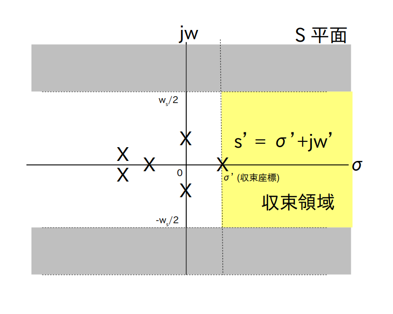
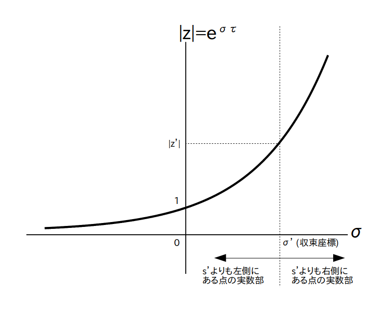
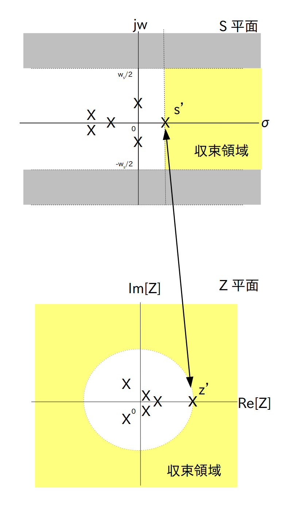

収束領域と極の関係の関係について話す前に、まず収束領域について復習しましょう。
Z変換 $\textrm{F}(z)$ に代入する $z$ の値によっては絶対値 $|\textrm{F}(z)|$ の値が無限大になる時があります。
この状況のことを
「$\textrm{F}(z)$は発散する」
といいます。
逆に絶対値が有限になる場合は
「$\textrm{F}(z)$は収束する」
といいます。
さてZ変換を工学的に応用する上で $\textrm{F}(z)$ が発散すると色々やっかいな事が生じますので、通常はZ平面内で$\textrm{F}(z)$ が収束する領域だけに $z$ が動ける領域(つまり値域)を制約します。
その領域のことを
「$\textrm{F}(z)$の収束領域」
といいます。
まとめると次のことが言えます。
ある時間領域ディジタル信号 $f[i]$ からZ変換 $\textrm{F}(z)$ を求める
$\textrm{F}(z)$ にはZ平面内に収束領域が存在して
さて $f[i]$ の式があらかじめ分かっていれば $\textrm{F}(z)$ の式を求める途中で収束領域が分かるのですが、$f[i]$ の式は分からないけど $\textrm{F}(z)$ の式は分かるという状況もよく有ります(例えば線形フィルタを設計する時など)。
この場合は $\textrm{F}(z)$ の式から収束領域を求める必要がありますが、Z 変換はディジタル信号版ラプラス変換でしたので、Z 変換の収束領域もラプラス変換と同様に極の位置から求めることが出来ます。
なお両側ラプラス変換と両側 Z 変換の収束領域は複雑になりますので、今回は片側ラプラス変換と片側 Z 変換の収束領域のみ考えます。
さて片側ラプラス変換では、S 平面の縦軸を $jw$、横軸を$\sigma$ とすると、極の中で一番右側にある(つまり実数部が一番大きい)極の右側が収束領域になっていました(図1の黄色の部分)。
なお実数部が一番大きい極を図1では $s'= \sigma' + j \cdot w' $ としています。
この $s'$ の実数部 $\sigma'$ のことを「収束座標」と呼び、収束領域は $\sigma > \sigma'$ で表されます。
バッテンは片側ラプラス変換の極の位置を表す

さて片側ラプラス変換の各極に対応する Z 平面上の各点もやはり片側 Z 変換の極になります。
そこで上図の $s'$ に対応する Z 平面上の点を $z'$ とすると、$z'$ の絶対値は
で表されますので、図 2 および図 3 より
(1) S 平面上で $s'$ よりも左側の領域内にある点は Z 平面上では半径 $|z'|$ の円の内側の領域内にある点になる
(2) S 平面上で $s'$ と同じ実数部を持つ点は Z 平面上では半径 $|z'|$ の円上の点になる
(3) S 平面上で $s'$ よりも右側の領域(つまり収束領域)内にある点は Z 平面上では半径 $|z'|$ の円の外側の領域内にある点になる
ということが分かります。
また(1)(2)より、
「 Z 変換の $z'$ 以外の極は半径 $|z'|$ の円の内側の領域内にある」
という事も分かります。
さらに(3)より
「Z 変換の収束領域は Z 平面上では半径 $|z'|$ の円の外側の領域になる」
という事も分かります。
サンプリング間隔 $\tau$ は 0 より大きい実数なので $\sigma$ が大きくなると $|z|$ も大きくなる
バッテンはラプラス変換およびZ変換の極の位置を表す
要するに次のことが言えます。
片側 Z 変換 $\textrm{F}(z)$ の極の中で一番絶対値が大きい極を $z'$ とする。
片側 Z 変換の収束領域は Z 平面上の半径 $|z'|$ の円の外側の領域(ただし円上の点は含まず)である (図3の下の図を参照)。
$f[i]$ の収束性についてもラプラス変換と同様の性質が成り立ちます。
あるアナログ信号 $f(t)$ が収束する条件はそのラプラス変換の全ての極が S 平面の左側にある(つまり実部が 0 より小さい)であることでしたので、上の議論から次の結論が導かれます。
片側 Z 変換 $\textrm{F}(z)$ の極が全て Z 平面上の単位円の内側にあること